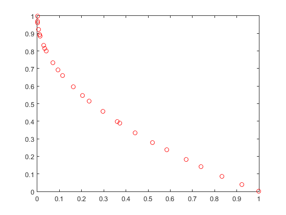

clear all; close all; clc; format long g;
seed = floor(sum(100*clock));
rng(seed, 'twister');
problem = 7;
data = problem_inputs(problem);
interactive_input = 0;
post_level = 1;
global INF EPS E PI
INF = 1.0e14;
EPS = 1.0e-14;
E = 2.71828182845905;
PI = 3.14159265358979;
fpt1 = fopen('initial_pop.out','w');
fpt2 = fopen('final_pop.out','w');
fpt3 = fopen('best_pop.out','w');
fpt4 = fopen('all_pop.out','w');
fpt5 = fopen('params_pop.out','w');
fprintf(fpt1, '# This file contains the data of initial population\n');
fprintf(fpt2, '# This file contains the data of final population\n');
fprintf(fpt3, '# This file contains the data of final feasible population (if found)\n');
fprintf(fpt4, '# This file contains the data of all generations\n');
fprintf(fpt5, '# This file contains information about inputs as read by the program\n');
disp(' Enter the problem relevant and algorithm relevant paramaters ...');
if interactive_input == 0
popsize = data.popsize;
disp([' Enter the population size (a multiple of 4) : ' num2str(popsize)])
else
popsize = input(' Enter the population size (a multiple of 4) : ');
end
if (popsize < 4) || (mod(popsize, 4) ~= 0)
disp([' The population size read is : ', num2str(popsize)]);
disp(' Wrong population size entered, hence exiting');
exit;
end
if interactive_input == 0
ngen = data.ngen;
disp([' Enter the number of generations : ' num2str(ngen)])
else
ngen = input(' Enter the number of generations : ');
end
if (ngen < 1)
disp([' The number of generations read is : ', num2str(ngen)]);
disp(' Wrong number of generations entered, hence exiting');
exit;
end
if interactive_input == 0
nobj = data.nobj;
disp([' Enter the number of objectives : ' num2str(nobj)])
else
nobj = input(' Enter the number of objectives : ');
end
if (nobj < 1)
disp([' The number of objectives entered is : ', num2str(nobj)]);
disp(' Wrong number of objectives entered, hence exiting');
exit;
end
if interactive_input == 0
ncon = data.ncon;
disp([' Enter the number of constraints : ' num2str(ncon)])
else
ncon = input(' Enter the number of constraints : ');
end
if (ncon < 0)
disp([' The number of constraints entered is : ', num2str(ncon)]);
disp(' Wrong number of constraints entered, hence exiting');
exit;
end
if interactive_input == 0
nreal = data.nreal;
disp([' Enter the number of real variables : ' num2str(nreal)])
else
nreal = input(' Enter the number of real variables : ');
end
if (nreal < 0)
disp([' The number of real variables entered is : ', num2str(nreal)]);
disp(' Wrong number of real variables entered, hence exiting');
exit;
end
if (nreal ~= 0)
min_realvar = zeros(1, nreal);
max_realvar = zeros(1, nreal);
for i=1:nreal
if interactive_input == 0
min_realvar(i) = data.min_realvar(i);
max_realvar(i) = data.max_realvar(i);
disp([' Enter the lower limit of real variable ', num2str(i), ' : ' num2str(min_realvar(i))])
disp([' Enter the upper limit of real variable ', num2str(i), ' : ' num2str(max_realvar(i))])
else
min_realvar(i) = input([' Enter the lower limit of real variable ', num2str(i), ' : ']);
max_realvar(i) = input([' Enter the upper limit of real variable ', num2str(i), ' : ' ]);
end
if (max_realvar(i) <= min_realvar(i))
disp(' Wrong limits entered for the min and max bounds of real variable, hence exiting');
exit;
end
end
if interactive_input == 0
pcross_real = data.pcross_real;
disp([' Enter the probability of crossover of real variable (0.6-1.0) : ' num2str(pcross_real)])
else
pcross_real = input(' Enter the probability of crossover of real variable (0.6-1.0) : ');
end
if (pcross_real < 0.0) || (pcross_real > 1.0)
disp([' Probability of crossover entered is : ', num2str(pcross_real)]);
disp(' Entered value of probability of crossover of real variables is out of bounds, hence exiting');
exit;
end
if interactive_input == 0
pmut_real = data.pmut_real;
disp([' Enter the probability of mutation of real variable (1/nreal) : ' num2str(pmut_real)])
else
pmut_real = input(' Enter the probability of mutation of real variable (1/nreal) : ');
end
if (pmut_real < 0.0 || pmut_real > 1.0)
disp([' Probability of mutation entered is : ', num2str(pmut_real)]);
disp(' Entered value of probability of mutation of real variables is out of bounds, hence exiting');
exit;
end
if interactive_input == 0
eta_c = data.eta_c;
disp([' Enter the value of distribution index for crossover (5-20) : ' num2str(eta_c)])
else
eta_c = input(' Enter the value of distribution index for crossover (5-20) : ');
end
if (eta_c < 0.0)
disp([' The value entered is : ', num2str(eta_c)]);
disp(' Wrong value of distribution index for crossover entered, hence exiting');
exit;
end
if interactive_input == 0
eta_m = data.eta_m;
disp([' Enter the value of distribution index for mutation (5-50) : ' num2str(eta_m)])
else
eta_m = input(' Enter the value of distribution index for mutation (5-50) : ');
end
if (eta_m < 0.0)
disp([' The value entered is : ', num2str(eta_m)]);
disp(' Wrong value of distribution index for mutation entered, hence exiting');
exit;
end
elseif nreal == 0
pcross_real = [];
pmut_real=[];
eta_c = [];
eta_m = [];
nrealcross = [];
nrealmut = [];
min_realvar = [];
max_realvar = [];
end
if interactive_input == 0
nbin = data.nbin;
disp([' Enter the number of binary variables : ' num2str(nbin)])
else
nbin = input(' Enter the number of binary variables : ');
end
if (nbin < 0)
disp([' The number of binary variables entered is : ', num2str(nbin)]);
disp(' Wrong number of binary variables entered, hence exiting');
exit;
end
if (nbin ~= 0)
nbits = zeros(1, nbin);
min_binvar = zeros(1, nbin);
max_binvar = zeros(1, nbin);
for i=1:nbin
if interactive_input == 0
nbits(i) = data.nbits(i);
disp([' Enter the number of bits for binary variable ', num2str(i), ' : ' num2str(nbits(i))])
else
nbits(i) = input([' Enter the number of bits for binary variable ', num2str(i), ' : ']);
end
if (nbits(i) < 1)
disp(' Wrong number of bits for binary variable entered, hence exiting');
exit;
end
if interactive_input == 0
min_binvar(i) = data.min_binvar(i);
max_binvar(i) = data.max_binvar(i);
disp([' Enter the lower limit of binary variable ', num2str(i), ' : ' num2str(min_binvar(i))])
disp([' Enter the upper limit of binary variable ', num2str(i), ' : ' num2str(max_binvar(i))])
else
min_binvar(i) = input([' Enter the lower limit of binary variable ', num2str(i), ' : ']);
max_binvar(i) = input([' Enter the upper limit of binary variable ', num2str(i), ' : ']);
end
if (max_binvar(i) <= min_binvar(i))
disp(' Wrong limits entered for the min and max bounds of binary variable, hence exiting')
exit;
end
end
if interactive_input == 0
pcross_bin = data.pcross_bin;
disp([' Enter the probability of crossover of binary variables (0.6-1.0) : ' num2str(pcross_bin)])
else
pcross_bin = input(' Enter the probability of crossover of binary variables (0.6-1.0) : ');
end
if (pcross_bin < 0.0 || pcross_bin > 1.0)
disp([' Probability of crossover entered is : ', num2str(pcross_bin)]);
disp(' Entered value of probability of crossover of binary variables is out of bounds, hence exiting');
exit;
end
if interactive_input == 0
pmut_bin = data.pmut_bin;
disp([' Enter the probability of mutation of binary variables (1/nreal) : ' num2str(pmut_bin)])
else
pmut_bin = input(' Enter the probability of mutation of binary variables (1/nreal) : ');
end
if (pmut_bin < 0.0 || pmut_bin > 1.0)
disp([' Probability of mutation entered is : ', num2str(pmut_bin)]);
disp(' Entered value of probability of mutation of binary variables is out of bounds, hence exiting');
exit;
end
elseif nbin == 0
pcross_bin = [];
pmut_bin = [];
nbincross = [];
nbinmut = [];
nbits = [];
min_binvar = [];
max_binvar = [];
parent_strings = [];
end
if (nreal == 0 && nbin == 0)
disp(' Number of real as well as binary variables, both are zero, hence exiting');
exit;
end
disp(' Input data successfully entered, now performing initialization')
fprintf(fpt5, '\n Population size = %d', popsize);
fprintf(fpt5, '\n Number of generations = %d', ngen);
fprintf(fpt5, '\n Number of objective functions = %d', nobj);
fprintf(fpt5, '\n Number of constraints = %d', ncon);
fprintf(fpt5, '\n Number of real variables = %d', nreal);
if (nreal ~= 0)
for i=1:nreal
fprintf(fpt5, '\n Lower limit of real variable %d = %e', i, min_realvar(i));
fprintf(fpt5, '\n Upper limit of real variable %d = %e', i, max_realvar(i));
end
fprintf(fpt5, '\n Probability of crossover of real variable = %e', pcross_real);
fprintf(fpt5, '\n Probability of mutation of real variable = %e', pmut_real);
fprintf(fpt5, '\n Distribution index for crossover = %e', eta_c);
fprintf(fpt5, '\n Distribution index for mutation = %e', eta_m);
end
fprintf(fpt5, '\n Number of binary variables = %d', nbin);
if (nbin ~= 0)
for i=1:nbin
fprintf(fpt5, '\n Number of bits for binary variable %d = %d', i, nbits(i));
fprintf(fpt5, '\n Lower limit of binary variable %d = %e', i, min_binvar(i));
fprintf(fpt5, '\n Upper limit of binary variable %d = %e', i, max_binvar(i));
end
fprintf(fpt5, '\n Probability of crossover of binary variable = %e', pcross_bin);
fprintf(fpt5, '\n Probability of mutation of binary variable = %e', pmut_bin);
end
fprintf(fpt5, '\n Seed for random number generator = %e\n', seed);
bitlength = 0;
if (nbin ~= 0)
bitlength = sum(nbits);
end
fprintf(fpt1, '# of objectives = %d, # of constraints = %d, # of real var = %d, # of bits of bin_var = %d, constr_violation, rank, crowding_distance\n', nobj, ncon, nreal, bitlength);
fprintf(fpt2, '# of objectives = %d, # of constraints = %d, # of real var = %d, # of bits of bin_var = %d, constr_violation, rank, crowding_distance\n', nobj, ncon, nreal, bitlength);
fprintf(fpt3, '# of objectives = %d, # of constraints = %d, # of real var = %d, # of bits of bin_var = %d, constr_violation, rank, crowding_distance\n', nobj, ncon, nreal, bitlength);
fprintf(fpt4, '# of objectives = %d, # of constraints = %d, # of real var = %d, # of bits of bin_var = %d, constr_violation, rank, crowding_distance\n', nobj, ncon, nreal, bitlength);
nbinmut = 0;
nrealmut = 0;
nbincross = 0;
nrealcross = 0;
ncolumn = nobj+ncon+nreal+nbin+1+1+1;
parent_pop = zeros(popsize,ncolumn);
if (nreal ~= 0)
parent_pop = initialize(parent_pop, popsize, nobj, ncon,nreal, min_realvar, max_realvar);
end
if (nbin ~= 0)
parent_strings = round(rand(popsize,bitlength));
parent_pop = decode(parent_pop, parent_strings, nobj, ncon, nreal, nbin, popsize, nbits, min_binvar, max_binvar);
end
disp(' Initialization done, now performing first generation');
parent_pop = evaluate(parent_pop, popsize, problem, nobj, ncon, nreal, nbin);
parent_pop = assign_rank_and_crowding_distance(parent_pop, nobj, ncon, nreal, nbin);
report_pop(parent_pop, fpt1, popsize, nobj, ncon, nreal, nbin);
fprintf(fpt4, '# gen = 1\n');
report_pop(parent_pop, fpt4, popsize, nobj, ncon, nreal, nbin);
disp(' # gen = 1');
for i=2:ngen
[child_pop, child_strings, nrealcross, nbincross] = selection(parent_pop, parent_strings, pcross_real, pcross_bin, ...
eta_c, nbincross, nrealcross, min_realvar, max_realvar, nbits, nobj, ncon, nreal, nbin);
[child_pop, child_strings, nbinmut, nrealmut] = mutation(child_pop, child_strings, popsize, nreal, pmut_real, ...
min_realvar, max_realvar, eta_m, nobj, ncon, nbin, nbits, pmut_bin, nbinmut, nrealmut);
if (nbin ~= 0)
child_pop = decode(child_pop, child_strings, nobj, ncon, nreal, nbin, popsize, nbits, min_binvar, max_binvar);
end
child_pop = evaluate(child_pop, popsize, problem, nobj, ncon, nreal, nbin);
mixed_pop = [parent_pop; child_pop];
mixed_pop = assign_rank_and_crowding_distance(mixed_pop, nobj, ncon, nreal, nbin);
[parent_pop, parent_strings] = fill_nondominated_sort(mixed_pop, [parent_strings; child_strings], nobj, ncon, nreal, nbin);
clear child_pop mixed_pop
fprintf(fpt4, '# gen = %d\n', i);
report_pop(parent_pop, fpt4, popsize, nobj, ncon, nreal, nbin);
disp([' # gen = ', num2str(i)])
end
disp(' Generations finished, now reporting solutions')
report_pop(parent_pop, fpt2, popsize, nobj, ncon, nreal, nbin);
report_feasible(parent_pop, fpt3, popsize, nobj, ncon, nreal, nbin);
if (nreal ~= 0)
fprintf(fpt5, ' Number of crossover of real variable = %d\n', nrealcross);
fprintf(fpt5, ' Number of mutation of real variable = %d\n', nrealmut);
end
if (nbin ~= 0)
fprintf(fpt5, ' Number of crossover of binary variable = %d\n', nbincross);
fprintf(fpt5, ' Number of mutation of binary variable = %d\n', nbinmut);
end
fprintf(fpt1, 'eof');
fprintf(fpt2, 'eof');
fprintf(fpt3, 'eof');
fprintf(fpt4, 'eof');
fprintf(fpt5, 'eof');
fclose(fpt1);
fclose(fpt2);
fclose(fpt3);
fclose(fpt4);
fclose(fpt5);
disp(' Routine successfully exited')
if post_level == 1
if nobj == 2
data = parent_pop(:,1:2);
plot(data(:,1),data(:,2),'ro')
elseif nobj == 3
data = parent_pop(:,1:3);
plot3(data(:,1),data(:,2),data(:,3),'ro')
elseif nobj == 1
fprintf('\n\nObjective Value of All Population Members:\n');
fprintf('Obj value = %10.4f\n',parent_pop(:,1));
end
else
pareto = NSGA2_postprocess(parent_pop, ngen, nbits, min_binvar, max_binvar, problem, ...
nobj, ncon, nreal, nbin);
end
Enter the problem relevant and algorithm relevant paramaters ...
Enter the population size (a multiple of 4) : 48
Enter the number of generations : 100
Enter the number of objectives : 2
Enter the number of constraints : 0
Enter the number of real variables : 3
Enter the lower limit of real variable 1 : 0
Enter the upper limit of real variable 1 : 1
Enter the lower limit of real variable 2 : 0
Enter the upper limit of real variable 2 : 1
Enter the lower limit of real variable 3 : 0
Enter the upper limit of real variable 3 : 1
Enter the probability of crossover of real variable (0.6-1.0) : 0.9
Enter the probability of mutation of real variable (1/nreal) : 0.033
Enter the value of distribution index for crossover (5-20) : 15
Enter the value of distribution index for mutation (5-50) : 20
Enter the number of binary variables : 0
Input data successfully entered, now performing initialization
Initialization done, now performing first generation
# gen = 1
# gen = 2
# gen = 3
# gen = 4
# gen = 5
# gen = 6
# gen = 7
# gen = 8
# gen = 9
# gen = 10
# gen = 11
# gen = 12
# gen = 13
# gen = 14
# gen = 15
# gen = 16
# gen = 17
# gen = 18
# gen = 19
# gen = 20
# gen = 21
# gen = 22
# gen = 23
# gen = 24
# gen = 25
# gen = 26
# gen = 27
# gen = 28
# gen = 29
# gen = 30
# gen = 31
# gen = 32
# gen = 33
# gen = 34
# gen = 35
# gen = 36
# gen = 37
# gen = 38
# gen = 39
# gen = 40
# gen = 41
# gen = 42
# gen = 43
# gen = 44
# gen = 45
# gen = 46
# gen = 47
# gen = 48
# gen = 49
# gen = 50
# gen = 51
# gen = 52
# gen = 53
# gen = 54
# gen = 55
# gen = 56
# gen = 57
# gen = 58
# gen = 59
# gen = 60
# gen = 61
# gen = 62
# gen = 63
# gen = 64
# gen = 65
# gen = 66
# gen = 67
# gen = 68
# gen = 69
# gen = 70
# gen = 71
# gen = 72
# gen = 73
# gen = 74
# gen = 75
# gen = 76
# gen = 77
# gen = 78
# gen = 79
# gen = 80
# gen = 81
# gen = 82
# gen = 83
# gen = 84
# gen = 85
# gen = 86
# gen = 87
# gen = 88
# gen = 89
# gen = 90
# gen = 91
# gen = 92
# gen = 93
# gen = 94
# gen = 95
# gen = 96
# gen = 97
# gen = 98
# gen = 99
# gen = 100
Generations finished, now reporting solutions
Routine successfully exited
